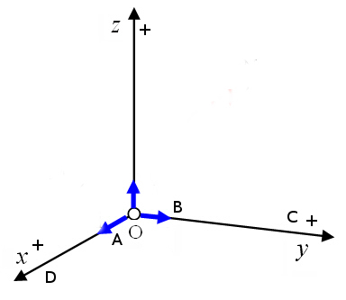
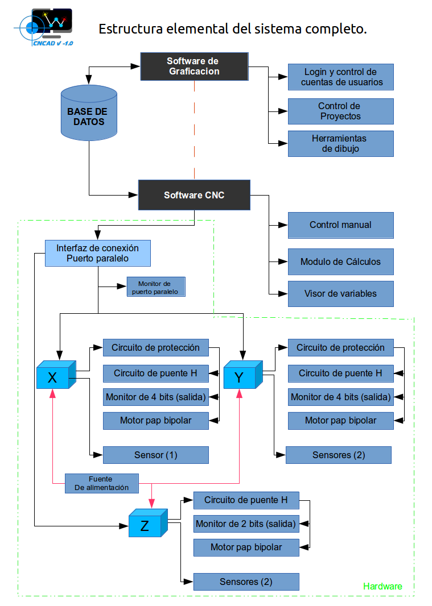

¿Que es CNC ?
El control numérico o control decimal numérico (CN) es un sistema de
automatización de máquinas herramienta que son operadas mediante
comandos programados en un medio de almacenamiento, en comparación con
el mando manual mediante volantes o palancas. Las primeras máquinas de
control numérico se construyeron en los años 1940 y 1950, basadas en las
máquinas existentes con motores modificados cuyos mandos se accionaban
automáticamente siguiendo las instrucciones dadas en un sistema de
tarjeta perforada. Estos servomecanismos iniciales se desarrollaron
rápidamente con equipos analógicos y digitales. El abaratamiento y
miniaturización de los microprocesadores ha generalizado la electrónica
digital en las máquinas
herramienta, lo que dio lugar a la denominación control decimal
numérico, control numérico por computadora , control numérico por
computador o control numérico computarizado (CNC), para diferenciarlas
de las máquinas que no tenían computadora. En la actualidad se usa el
término control numérico para referirse a este tipo de sistemas, con o
sin computadora.
Este sistema ha revolucionado la industria debido al abaratamiento de
microprocesadores y a la simplificación de la programación de las
máquinas de CNC.
Principio de funcionamiento
Para mecanizar una pieza se usa un sistema de coordenadas que
especificarán el movimiento de la herramienta de corte.
El sistema se basa en el control de los movimientos de la herramienta
de trabajo con relación a los ejes de coordenadas de la máquina, usando
un programa informático ejecutado por un ordenador.
Router CNC
El objetivo o función del Router CNC es poder recortar piezas de
polietileno expandido (telgopor) previamentes graficadas en el software
. En este caso, hace falta controlar los movimientos de la herramienta
en tres ejes de coordenadas: El eje X que es de base, con
desplazamiento horizontal, sobre este se desplaza el eje Y con
movimiento longitudinal y final-mente el eje Z con dos posicionamientos
verticales sobre el eje Y.
Coordenadas
Ejes 'X',' Y' y ' Z'.

Tanto en el software como en el router
opte por usar el cuadrante con vectores positivos, y como punto central
0 en los tres ejes .
Por
lo tanto, como resultado los movimientos de cota, alejamiento, y
distancia son positivos . El eje "X" tiene un largo total de
desplazamiento de 55 cm, y el eje "Y" de 34 cm, mientras que el eje Z
se puede posicionar en dos puntos cardinales verticales que le permita
hacer contacto con la pieza de telgopor, o alejarse de la misma,
permitiendo la posibilidad de ubicarse en otro punto del eje Y o X ,
sin alterar indebidamente la pieza a cortar.


ENTORNO DE DESAROLLO.
¿ Porque el sistema se desarrolla bajo
el entorno GNU/LINUX ?
Porque el conocimiento tiene que ser libre y gratuito a todo
aquel que quiera adquirirlo, ningún software desarrollado bajo un
sistema operativo privativo es 100 % transparente, por mas que sea de
código abierto el software desarrollado en el .
No se trata de facilidad, ni de rapidez , las desventajas pueden ser
mayores o menores , pero no se trata de eso ,y ni tampoco de tener que
saberlo todo , si no de la libertad de saber lo que uno quiera
aprender ...
Si bien el software puede funcionar y ser desarrollo en cual
distribución de GNU/LINUX
Se utiliza Fedora o Ubuntu por preferencia.
Ver en
anexos Fedora, Ubuntu.
El software se desarrolla con el
lenguaje de programación Gambas .
GAMBAS está basado en componentes, por lo cual tiene muchas
posibilidades que son interesantes.
se pueden diseñar interfaces gráficas con QT4 o GTK+, acceder a MySQL,
PostgresSQL, ODBC y
SQLite, aplicaciones con D-bus, traducir su programa a cualquier
lenguaje, crear aplicaciones de red
fácilmente, hacer aplicaciones 3D en OpenGL, hacer aplicaciones web
CGI, etc.
GAMBAS es un lenguaje con objetos, construido a partir de un intérprete
de BASIC y se libera bajo la
licencia pública general de GNU.
.
Ver mas sobre "Gambas" en
anexos .